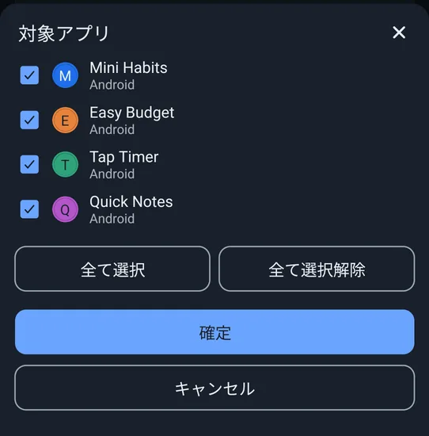

📖 はじめに（この画面でできること）
すべてのタブに共通する操作は、このページにまとめています。各タブの内容は、このあとの各ページで解説します。
🛠️ 詳しい使い方
STEP 1
画面の構成（下部のタブ・PREMIUM・取得の状態）
画面の下に、6つのタブが並びます。左から「収益」「インストール」「ユーザー」「評価」「品質」「設定」です。
- 右上の「PREMIUM」: PREMIUMの説明・登録の画面を開きます（登録済みのときは、チェックマークが付きます）。
- タイトルの横の取得状態: 「データ全取得完了」「データ取得一部失敗あり」「データ取得中…」「データ未取得」と、取得した日時が出ます。タップすると、項目ごとの成功・失敗の一覧が開きます。
- 各カードの見出しの下の小さな字: 期間・単位・グラフの読み方と、「◯/◯分まで集計済み」（数字が入っている最後の日）が出ます。

見出しの下に、「10/25分まで集計済み」のように最新の日が表示されます
STEP 2
表示するアプリを選ぶ（対象アプリ）
設定タブ以外の画面の右下には、丸いボタンがあります。押すと、「対象アプリ」のシートが開き、表示したいアプリを選べます。ボタンの下には、「選択件数/全件数」が出ます。
- アプリ名の左のチェックを付け外しして選びます。「全て選択」「全て選択解除」で、一度に切り替えられます。
- 「確定」を押すまで、選択は反映されません。「キャンセル」・シートの外のタップ・戻る操作では、変更は捨てられます。
- 選んだアプリは端末に保存され、収益・インストール・評価・品質のすべてのタブに、同じ選択が使われます（何も選んでいないときは、すべてのアプリが対象です）。
- 金額や件数は、選んだアプリの合計になります。グラフは、アプリごとの色の積み上げです。
- 新しく追加されたアプリは、自動で対象に入ります。

対象アプリのシート
STEP 3
データを更新する
データは、アプリを開いたときに自動で取得されます（設定の「自動取得」がオンのとき）。自分で更新したいときは、各画面を下に引っ張る（プルダウン）と、AdMobとPlayの両方のデータを取り直します。
- 前回の取得から15分以内は、手動での更新は受け付けません（何も起きません）。ただし、直前の取得で失敗した項目があるときは、15分以内でも更新できます。
- 「保存したデータを消して取り直す」を実行した直後は、時間に関係なく取り直します。
- 取得中は、右下の丸いボタンのまわりが回ります。
STEP 4
グラフの見かた・操作
収益・インストール・ユーザー・評価のグラフは、共通の操作でご利用いただけます。
- タップ: タップした日が斜線と枠線で強調され、グラフの下の「選んだ日」のボックスに、その日の合計とアプリごとの内訳が出ます。内訳が4件を超えるときは、「他◯件を表示」で開閉できます。
- ピンチ（2本指で広げる・つまむ）: 拡大・縮小します。縮小しすぎると、1週間ごとの合計の棒に切り替わり、タップすると、その週の合計が出ます。
- 横にスクロール: 前後の日付を見られます。最初は、直近30日が画面に入る幅で、いちばん新しい日が右端に来ます。保存している期間は、最大で約2年（730日）です。
- 「表示中: 09/26〜10/26(31日間)」: グラフの上に、いま見えている期間が出ます。
- 灰色の「未集計」: Playのレポートは数日遅れます。この日は、0件ではなく、まだ数字が分からない日です。

グラフの下の「選んだ日」ボックスに、アプリごとの内訳が出ます
❓ よくある質問（FAQ）
Q 右下の丸いボタンが、数字に重なって見えにくいです。
このボタンは、対象アプリを選ぶためのものです。画面をスクロールしても、常に右下に表示されます。表示したい内容は、スクロールして位置をずらすと見えます。
Q 金額が合計されず、通貨ごとに分かれています。
AdMobのアカウントによって、通貨が違うことがあります。違う通貨の金額は、足さずに、通貨ごとに分けて表示します。
Q 「◯/◯分まで集計済み」とは、何ですか？
そのデータに、数字が入っている最後の日です。この日より後は、0件ではなく、まだ分からない日（未集計）です。AdMobは数時間〜1日、Playのレポートは数日遅れて反映されます。
Q 日付や時間は、どの時間帯のものですか？
「今日」「昨日」などは、端末のローカルの日付で判定します。AdMobのレポートは、AdMobアカウントのタイムゾーン基準なので、日付の境目に数時間のずれが出ることがあります。